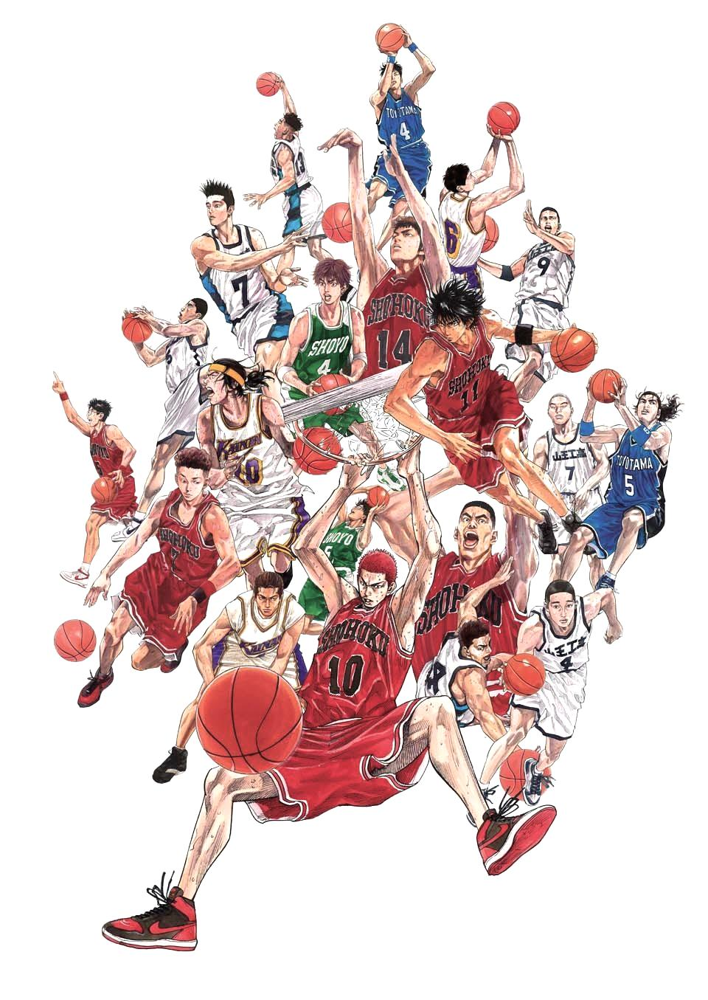

Historia
Slam Dunk narra la historia de la evolución como jugador de baloncesto y como persona de su protagonista, Hanamichi Sakuragi, un joven de 15 años, problemático y pandillero con un impresionante registro de rechazos amorosos a sus espaldas. Al inicio de la serie Hanamichi no sabe nada de lo que es el deporte, pero para llamar la atención de una niña ingresa al equipo de baloncesto de su escuela.
